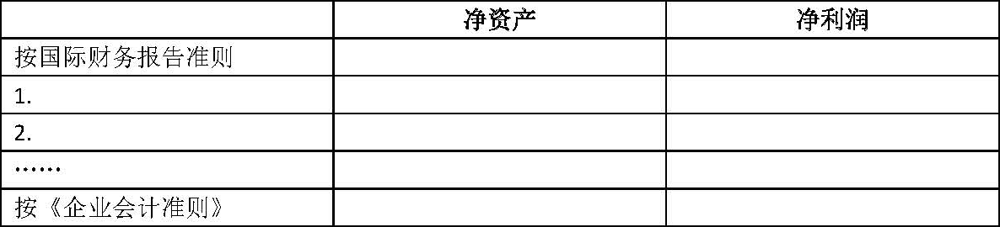

公开发行证券的公司信息披露编报规则第15号——财务报告的一般规定（2007年修订）
第一章 总则
第一条 为规范公开发行证券的公司财务信息披露行为，保护投资者的合法权益，依据《公司法》、《证券法》等法律、法规，《企业会计准则》及中国证券监督管理委员会（以下简称“中国证监会”）的有关规定，制定本规定。
第二条 凡在中华人民共和国境内公开发行证券并在证券交易所上市的股份有限公司（以下简称“公司”），按照有关规定需要披露年度财务报告或需要参照年度财务报告披露有关财务信息时，应遵循本规定。
第三条 本规定是对财务报告披露的最低要求。不论本规定是否有明确要求，凡对投资者进行投资决策有重大影响的财务信息，公司均应予以充分披露。
本规定某些具体要求对公司确实不适用的，公司可根据实际情况，在不影响披露内容完整性的前提下做出适当修改，但应在财务报表附注中做出说明。
第四条 由于商业秘密等原因导致本规定某些信息确实不便披露的，首次公开发行股票公司可向中国证监会申请豁免，已经公开发行股票并在证券交易所上市的公司可向证券交易所申请豁免，经批准并报中国证监会备案后，可以不予披露。
第五条 公司编制和对外提供的财务报告，不得含有虚假的信息或者隐瞒重要事实。公司董事会、监事会及董事、监事、高级管理人员承诺提供的财务报告不存在虚假的记载、误导性陈述或重大遗漏，并就财务报告的真实性、准确性、完整性承担个别和连带的法律责任。
第六条 公司年度财务报告应由具有证券期货相关业务资格的会计师事务所审计，有关审计报告由上述会计师事务所盖章及由两名或两名以上注册会计师签名盖章。
编制合并财务报表的公司，纳入合并范围的子公司和特殊目的主体的年度财务报告，以及对公司财务报告有重大影响的联营公司、合营公司的年度财务报告，也应由具有证券期货相关业务资格的会计师事务所审计。
补充资料原则上应由具有证券期货相关业务资格的会计师事务所审计，证监会另有规定的除外。
第七条 特殊行业公司财务报告的披露除需遵守本规定外，还需遵循其财务报告的特别规定。
第二章 财务报表
第八条 公司应按企业会计准则的要求编制财务报表，并遵循相关信息披露规范的规定。
第九条 本规定要求披露的财务报表包括资产负债表、利润表、现金流量表和所有者权益（或股东权益）变动表。
第十条 编制合并财务报表的公司，除提供合并财务报表外，还应提供母公司财务报表。
第十一条 公司提供的财务报表中会计数据的排列应自左至右，最左侧为最近一期数据；表内各主要报表项目应标有附注编号，并与财务报表附注编号相一致；年度报告摘要部分中引用编号应与财务报表附注的编号一致。
第十二条 公司提供的财务报表应加盖公司公章，由公司法定代表人、主管会计工作的公司负责人、公司会计机构负责人（会计主管人员）签名并盖章。若公司设置总会计师的，总会计师应签名并盖章。
第三章 财务报表附注
第十三条 公司应按照有关企业会计准则和本规定的要求，编制和披露财务报表附注。公司编制和披露附注时应遵循重要性原则。
第十四条 财务报表附注应当对财务报表中相关数据涉及的交易、事项做出真实、完整、明晰的说明。
第一节 公司的基本情况
第十五条 首次公开发行证券的公司应简述公司历史沿革、改制情况、行业性质、经营范围、主要产品或提供的劳务、主业变更、公司的基本组织架构等。
首次公开发行证券的公司若从其设立为股份有限公司时起运行不足3年的，应说明设立为股份有限公司之前各会计期间的财务报表主体及其确定方法和所有者权益（或股东权益）变动情况。
第十六条 上市公司披露定期报告时至少应简述公司历史沿革、所处行业、经营范围、主要产品或提供的劳务等。公司在报告期间内主营业务发生变更的，应予以说明。
第二节 会计政策、会计估计和前期差错
第十七条 公司应着重说明编制财务报告所采用的重要会计政策和会计估计变更的内容和原因，及其对公司财务状况、经营成果和现金流量的影响。公司应说明前期重大会计差错的性质、累计影响数和财务报表中各个比较期间受影响的项目名称和更正金额，无法进行追溯重述的，应说明该事实和原因，及对前期差错开始进行更正的时点和对更正时点财务状况或本期经营成果的影响。
第十八条 公司应根据《企业会计准则第30号—————财务报表列报》等相关准则要求，披露报告期内采用的重要会计政策和会计估计。同时，按本规定要求并结合公司实际进行披露：
（一）遵循企业会计准则的声明。
（二）财务报表的编制基础。
（三）会计期间。
（四）记账本位币。若记账本位币为人民币以外的其他货币的，说明选定记账本位币的考虑因素及折算成人民币时的折算方法。
（五）计量属性在本期发生变化的报表项目及其本期采用的计量属性。
（六）编制现金流量表时现金等价物的确定标准。
（七）发生外币交易时以及在资产负债表日采用的折算方法，以及汇兑损益的处理方法。
（八）金融资产的分类方法；金融工具的确认依据和计量方法；金融资产转移的确认依据和计量方法；主要金融资产的公允价值确定方法、减值测试方法和减值准备计提方法。
金融负债的分类方法；主要金融负债公允价值的确定方法。
本期内将尚未到期的持有至到期投资重分类为可供出售金融资产的，说明持有意图或能力发生改变的依据。
披露承担汇率波动风险的金融工具的汇率风险。
（九）应收款项坏账准备的确认标准、计提方法。
（十）存货分类依据；发出存货的计价方法；确定不同类别存货可变现净值的依据及存货跌价准备的计提方法；存货的盘存制度以及低值易耗品和包装物的摊销方法。
（十一）投资性房地产的种类和计量模式；采用成本模式的，投资性房地产的折旧或摊销方法以及减值准备计提依据；采用公允价值模式的，应披露该项会计政策选择的依据，包括投资性房地产所在地有活跃的房地产交易市场的合理证据；公司能够从房地产交易市场取得同类或类似房地产的市场价格及其他相关信息，从而对投资性房地产的公允价值进行估计的证据；同时说明对投资性房地产的公允价值进行估计时涉及的关键假设和主要不确定因素。
（十二）固定资产的确认条件、分类、折旧方法，各类固定资产的使用寿命、预计净残值和折旧率。如存在闲置固定资产应说明其认定标准、折旧方法。认定融资租赁的依据，融资租入固定资产的计价方法、折旧方法。
（十三）在建工程的类别、结转为固定资产的标准和时点。
（十四）生物资产的确定标准、分类，各类生物资产的使用寿命和预计净残值的确定依据、折旧方法和减值准备计提方法。采用公允价值计量生物资产的，应披露采用公允价值的依据。
（十五）无形资产的计价方法；使用寿命有限的无形资产，其使用寿命估计情况；使用寿命不确定的无形资产，使用寿命不确定的判断依据；对使用寿命不确定的无形资产，还应说明每一个会计期间对该无形资产使用寿命进行复核的程序，以及针对该项无形资产的减值测试结果；划分公司内部研究开发项目研究阶段支出和开发阶段支出的具体标准。
（十六）除存货、投资性房地产及金融资产外，其他主要类别资产的资产减值准备确定方法。
（十七）资产组产生的主要现金流入独立于其他资产或资产组的现金流入的依据；计提应收款项坏账准备、存货跌价准备依据，计提可供出售金融资产、持有至到期投资、长期股权投资、固定资产、在建工程、生物资产、无形资产、商誉及其他资产减值的依据。
（十八）长期股权投资的初始计量、后续计量及收益确认方法；确定对被投资单位具有共同控制、重大影响的依据。
（十九）借款费用资本化的确认原则、资本化期间、暂停资本化期间以及借款费用资本化金额的计算方法。
计算各项利息费用时利率的确定方法，采用实际利率计算利息费用的，说明实际利率的计算过程。
（二十）股份支付的种类及权益工具公允价值的确定方法；确认可行权权益工具最佳估计的依据。
（二十一）销售商品、提供劳务及让渡资产使用权等交易的收入确认方法。按完工百分比法确认提供劳务的收入时，确定完工进度的方法；公司确认让渡资产使用权收入的依据；建造合同的结果能够可靠估计的依据和确定合同完工进度的方法。
（二十二）确认递延所得税资产的依据。
（二十三）编制合并报表时，合并范围发生变更的理由。
（二十四）公司年金计划的主要内容及重大变化。
（二十五）金融资产转移、非金融资产证券化业务的主要会计处理方法。
（二十六）公司应说明被套期项目、对应的套期工具、指定该套期关系的会计期间，以及套期有效性评价方法。
第三节 税项
第十九条 按税种分项说明报告期执行的法定税率。
各分公司、分厂异地独立缴纳所得税的，应说明各分公司、分厂执行的所得税税率。本期内所得税税率的变化、税率优惠政策，若税率、税率优惠政策较上期没有发生变化，也应说明。
第二十条 存在各税种的税负减免的，应按税种分项说明相关法律法规或政策依据、批准机关、批准文号、减免幅度及有效期限。对于超过法定纳税期限尚未缴纳的税款，应列示主管税务机关的批准文件。享有其他特殊税收优惠政策的，应说明该政策的有效期限、累计获得的税收优惠以及已获得但尚未执行的税收优惠。
第四节 企业合并及合并财务报表
第二十一条 公司应披露其所控制的境内外重要子公司的全称、注册地、业务性质、注册资本、经营范围以及本公司期末对其实际投资额、实质上构成对子公司的净投资的余额、持股比例和表决权比例等。对于通过企业合并取得的子公司，应分别“通过同一控制下的企业合并取得的子公司”和“通过非同一控制下的企业合并取得的子公司”两大类别做上述披露。
第二十二条 对纳入合并范围但母公司拥有其半数或半数以下表决权的子公司，应说明纳入合并范围的原因。对于母公司拥有半数以上表决权，但未能对其形成控制的被投资单位，应说明未形成控制的原因。
第二十三条 公司报告期内合并范围如发生变更的，应当披露变更原因，并披露报告期内新纳入合并范围公司以及报告期内不再纳入合并范围公司的净资产和净利润。
第二十四条 说明属于“同一控制下企业合并”的判断依据，披露同一控制的实际控制人。本期发生同一控制下企业合并的，应披露被合并方自合并本期期初至合并日的收入、净利润、现金流量等情况。
第二十五条 披露非同一控制下企业合并中商誉（负商誉）的金额和确定方法。若发生非同一控制下的购买、出售股权而增加或减少子公司的，应说明购买日或出售日的确定方法。同时，还应说明相关交易公允价值的确定方法。
第二十六条 报告期内发生吸收合并的，应披露其主要资产、负债项目的入账价值确定方法。对同一子公司的股权在连续两个会计年度买入再卖出，或卖出再买入时，应披露相关的会计处理。
第二十七条 分别列示各个重要子公司少数股东权益、少数股东权益中用于冲减少数股东损益的金额，以及从母公司所有者权益冲减子公司少数股东分担的本期亏损超过少数股东在该子公司期初所有者权益中所享有份额后的余额。
第二十八条 合并报表中包含境外经营实体时，应披露各主要财务报表项目的折算汇率以及外币报表折算差额的处理方法。
第五节 财务报表项目附注的要求
第二十九条 编制合并财务报表的公司，应按照本规定对合并财务报表项目进行注释，还应对母公司财务报表的主要项目进行注释。
第三十条 对资产负债表中的资产、负债项目，注释最近期间的期末、期初比较数据，所有者权益（或股东权益）项目、利润表和现金流量表项目应按照比较财务报表逐期列示并说明各期重要数据变动情况。因担保或其他原因造成所有权或使用权受到限制的资产项目，应在其附注中充分披露。
第三十一条 以外币标示的货币资金、应收款项、应付款项、预收款项和预付款项等，应列示其原币金额以及折算汇率。
第三十二条 具体的报表项目应按以下要求进行注释：
（一）按现金、银行存款、其他货币资金分别列示货币资金情况。因抵押或冻结等对使用有限制、存放在境外、有潜在回收风险的款项应单独说明。
（二）交易性金融资产分别交易性债券投资、交易性权益工具投资、指定为以公允价值计量且其变动计入本期损益的金融资产、衍生金融资产等类别，披露其期初公允价值和期末公允价值。
应说明交易性金融资产投资变现是否存在重大限制，以及相应原因。
（三）列示应收票据的种类、金额。已用于质押的应收票据，应单独列示出票单位、出票日期、到期日、金额等重要事项。充分披露有追索权的票据背书、以票据为标的资产的资产证券化安排。因出票人无力履约而将票据转为应收账款的票据，以及期末公司已经背书给他方但尚未到期的票据，按票据的出票单位、出票日期、到期日、金额等重要事项进行逐项披露，或者合并披露此类票据总额、到期日区间。
（四）分项列示1年以上应收未收的应收股利、应收利息金额，对其中金额较大的，应分别被投资单位或投资项目说明每项应收股利未收回的原因和对相关款项是否发生减值的判断；分别贷款单位说明每项应收利息未收回的原因和对相关款项是否发生减值所作的判断。
（五）分别单项金额重大的应收款项、单项金额不重大但按信用风险特征组合后该组合的风险较大的应收款项、其他不重大应收款项，列示这三类应收款项金额、占应收款项总额的比例、坏账准备计提比例和金额。
对应收款项应说明如下事项：
1、单项金额重大的应收款项，应单独说明其计提的比例及其理由；单项金额不重大但按信用风险特征组合后该组合的风险较大的应收款项，应说明确定该组合的依据；
2、以前年度已全额计提坏账准备，或计提坏账准备的比例较大，但在本年度又全额或部分收回的，或通过重组等其他方式收回的应收款项，应说明其原因，原估计坏账准备计提比例的理由，以及原估计坏账准备计提比例的合理性；
3、本年度实际核销的应收款项性质、原因及其金额。若实际核销的款项是因关联交易产生的，应单独披露；
4、应收款项中如有持公司5%（含5%）以上表决权股份的股东单位欠款，应予以说明，并单独列示；如无此类欠款，也应予以说明；
5、金额较大的其他应收款项，应说明其性质或内容；
6、列示金额（按欠款方合并后的金额）位列前五名的应收账款和其他应收款项及其对应的欠款年限、占应收账款总额或其他应收款总额的比例。
7、应收关联方款项占应收款项总额的比例。
8、不符合终止确认条件的应收款项的转移，应在附注中单独列示其金额。
9、以应收款项为标的资产进行资产证券化的，需简要说明相关交易安排。
（六）应按不同账龄列示预付账款余额及各账龄余额占预付账款总额的比例。账龄超过1年的重要预付账款，应逐项说明未及时结算的原因。
预付账款中如有预付持公司5%（含5%）以上表决权股份的股东单位的款项，应单独列示。金额较大的预付账款（占期末预付账款总额的30%及以上），应说明其性质和内容。
若各会计期间的期末预付账款余额比上期期末预付账款余额增加或减少超过30%或预付账款期末余额超过资产总额的10%的，应说明其原因。
（七）对属于证券化标的且不符合终止确认条件的金融工具，应分项披露其金额。
（八）分项列示存货期初、期末金额及对应的跌价准备，披露计提存货跌价准备的依据及本期转回存货跌价准备的原因、本期转回金额占该项存货期末余额的比例。存货期末余额含有借款费用资本化金额的，应予披露。
（九）金额较大的其他流动资产，应列示其内容、性质。
（十）分别持有至到期投资、贷款和应收款项、可供出售金融资产，列示其期初金额、期末金额。持有至到期投资重分类为可供出售金融资产时，列示重分类的持有至到期投资金额及该金额占可供出售金融资产总额的比例。披露本期内出售但尚未到期的持有至到期投资金额，及其占该项投资在出售前金额的比例。
可供出售金融资产的长期债权投资，按其种类列示长期债权投资的面值、年利率、初始投资成本、到期日、本期利息、累计应收或已收利息、期末余额。
（十一）分别融资租赁、分期收款销售商品、分期收款提供劳务披露对应的长期应收款金额。
（十二）分别对合营企业投资、对联营企业投资披露被投资单位名称及主要财务信息。主要财务信息按合营企业、联营企业的报表数列示。合营企业、联营企业的重要会计政策、会计估计与公司的会计政策、会计估计存在重大差异的，应予以披露。
（十三）公司对被投资公司持股比例与其在被投资单位表决权比例不一致的，应说明原因。
分别披露按成本法核算和按权益法核算的长期股权投资，并按被投资单位披露长期股权投资的初始金额、期初余额、期末余额、增减变动情况等。若股权投资采用权益法核算，还应列示从被投资单位分得的现金红利。
公司应按被投资单位披露长期股权投资的减值情况。
（十四）采用成本计量模式的投资性房地产，分项列示其原价、累计折旧、减值准备累计金额以及账面价值的期初额、本期增加额、本期减少额、期末额。
（十五）分项列示固定资产的原价、累计折旧、减值准备累计金额以及账面价值的期初额、本期增加额、本期减少额和期末额。
公司应披露本期在建工程完工转入固定资产的情况。公司还应披露暂时闲置固定资产的账面原值、累计折旧、减值准备和账面净值，若未对该暂时闲置固定资产计提减值准备，应披露未计提减值准备的原因以及预计何时投入正常生产经营。公司应披露未办妥产权证书的固定资产有关情况。
通过融资租赁租入的固定资产应披露每类租入资产的账面原值、累计折旧、账面净值。通过经营租赁租出的固定资产应披露每类租出资产的账面价值。
（十六）列示重要的在建工程名称、预算数、期初余额、本期增加额、本期转入固定资产额、其他减少额、期末余额、资金来源、工程投入占预算的比例。
分项列示在建工程期初余额、本期增加额、本期转入固定资产、其他减少额、期末余额中所包含的借款费用资本化金额。
用于确定借款费用资本化金额的资本化率应单独披露。
披露主要工程项目的资金来源，资金来源应区分募股资金、金融机构贷款和其他来源等。
分项列示计提在建工程减值准备的金额及计提的原因。
（十七）分项列示各类工程物资的期初、期末余额。
（十八）分项列示公司转入清理但尚未清理完毕的固定资产清理账面价值及转入清理的原因。
（十九）分项披露生物资产、油气资产的期初额、本期增加额、本期减少额、期末额。
（二十）分项披露无形资产的累计减值准备金额、账面价值的期初额、本期增加额、本期减少额、期末额。同时，披露本期发生的内部研究开发项目支出总额，以及计入研究阶段支出金额和计入开发阶段的金额。
在报告期内发生的单项价值在100万元以上的无形资产，若该资产原始价值是以评估值作为入账依据的，还应披露评估机构名称、评估方法。对于通过非同一控制下企业合并形成的商誉，应列示商誉的计算过程。
（二十一）分项列示公司除以上长期资产项目外的其他长期资产的金额。金额较大的其他长期资产，还应列示其内容。
（二十二）分别引起暂时性差异的资产或负债项目，列示对应的暂时性差异金额。
（二十三）资产减值准备明细表按《企业会计准则第30号》应用指南的规定列报。
（二十四）按借款条件（信用借款、抵押借款、保证借款、质押借款等）分项列示短期借款金额。
对已到期未偿还的短期借款，应单独列示贷款单位、贷款金额、贷款利率、贷款资金用途、未按期偿还的原因及预计还款期，并在期后事项中反映报表日后是否已偿还。若已到期的短期借款获得展期，应说明展期条件、新的到期日。
（二十五）分别发行的交易性债券、指定为以公允价值计量且其变动计入本期损益的金融负债、衍生金融负债、其他金融负债列示其期初公允价值、期末公允价值。
（二十六）按应付票据的种类分项列示其金额，并说明下一会计期间将到期的金额。
（二十七）对于应付款项，包括应付账款、预收账款和其他应付款等，说明有无欠持有本公司5%（含5%）以上表决权股份的股东单位或关联方的款项；如无此类欠款，也应说明。
账龄超过1年的大额应付账款、预收账款及其他应付款，应说明未偿还或未结转的原因，并在资产负债表日后事项中说明是否偿还。金额较大的其他应付款，也应说明其性质或内容。
（二十八）分别工资、奖金、津贴和补贴、职工福利、社会保险费、住房公积金等项目，披露对应的期初账面余额、本期增加额、本期支付额、期末账面余额。
披露应付职工薪酬中属于拖欠性质或工效挂钩的部分。
（二十九） 分别所得税、增值税等税种，披露其期初账面余额、期末账面余额。
所在地税务机关同意各分公司、分厂之间应纳税所得额相互调剂的，应说明税款计算过程。
（三十）按主要投资者列示欠付的应付股利金额并说明原因。
（三十一）分项列示其他应付款的期末余额、性质。
（三十二）按费用类别披露预提费用年末结存余额的原因。
（三十三）列示预计负债的种类、形成原因以及各类预计负债的期初、期末余额和本期变动额。
（三十四）分项列示1年内到期的长期借款、应付债券、长期应付款，其附注要求同“长期借款”、“应付债券”、“长期应付款”。对于逾期借款，分别贷款单位、借款金额、逾期时间、年利率披露；同时，还应说明逾期未偿还的原因和预期还款期，并在期后事项中反映报表日后是否已偿还。逾期借款获得展期的，说明展期条件、新的到期日。
（三十五）按币种、借款条件（信用借款、抵押借款、保证借款、质押借款等）、贷款单位分项列示长期借款金额。
（三十六）分项列示应付债券的种类、期限、发行日期、面值总额、溢价（折价）额、应计利息总额、期末余额。说明可转换公司债券的转股条件、转股时间。
（三十七）分项列示各项长期应付款的金额及其期限。
（三十八）分项列示专项应付款的种类、期初余额、本期结转金额、期末余额等。
（三十九）说明报告期股本的变动情况。如果报告期内有增资行为的，应披露执行验资的会计师事务所名称和验资报告文号。
运行不足3年的股份有限公司，设立前的年份只需说明净资产情况。
有限责任公司整体变更为股份公司应说明公司设立时的验资情况。
（四十）公司应披露与库存股相关的如下信息：
1、回购本公司股份的原因及对应的库存股成本确定方法；
2、因库存股注销而减少的股本；
3、注销的库存股成本高于对应股本成本的，披露依次冲减的 资本公积、盈余公积、未分配利润的金额；注销的库存股成本低于对应股本成本的，披露增加的资本公积金额；
4、库存股转让时，转让收入高于库存股成本的，披露增加的资本公积金额；转让收入低于库存股成本的，披露依次冲减的资本公积、盈余公积、未分配利润的金额；
5、因实行股权激励回购本公司股份的，应披露本期回购股份占本公司已发行股份的总比例和累计库存股占已发行股份的总比例。
（四十一）分项列示报告期资本公积的变动情况及其原因、依据。若用资本公积转增股本，应说明其履行的法律程序及有关决议。
（四十二）分项列示报告期盈余公积的变动情况。用盈余公积转增股本、弥补亏损、分派股利的，应说明有关决议。
（四十三）列示报告期利润分配比例以及未分配利润的增减变动情况。若有对以前年度损益调整致使期初未分配利润变动的情况，应对变动内容、变动原因、依据和影响做出说明。
对于首次公开发行证券的公司，如果发行前的滚存利润经股东大会决议由新老股东共同享有，应明确予以说明；如果发行前的滚存利润经股东大会决议在发行前进行分配并由老股东享有，公司应明确披露应付股利项目中列示的老股东享有的经审计的利润数。
（四十四）分别主营业务收入和其他业务收入列示其本期发生额、上期发生额。同时，按产品或业务类别列示主营业务收入、主营业务成本及营业利润情况。
应披露公司前五名客户的销售收入总额，以及占公司全部销售收入的比例。
（四十五）分别固定造价合同、成本加成合同列示各项合同项目的合同总金额、累计已发生成本、累计已确认毛利（亏损为负数）、已办理结算的价款金额。
（四十六）分项列示营业税费的计缴标准及金额。
（四十七）分项列示公允价值变动损益的内容和金额。
（四十八）按投资单位分项列示投资收益的有关情况，包括投资收益的增减变动及其原因。同时，应说明投资收益汇回的重大限制。若不存在重大限制，也应做出说明。
（四十九）分项列示资产减值损失的内容及其本期发生额、上期发生额。
（五十）分项列示营业外收入和营业外支出的内容和金额。
（五十一）披露所得税中“本期所得税费用”和“递延所得税费用”的金额。
（五十二）披露公司本期取得的政府补助种类及金额。
（五十三）列示基本每股收益和稀释每股收益的计算过程。
（五十四）支付或收到的其他与经营活动、筹资活动、投资活动有关的现金，对于其中价值较大的应分项单独列示。同时，企业应当披露将净利润调节为经营活动现金流量的信息。
第六节 母公司财务报表有关项目附注
第三十三条 母公司财务报表有关项目包括应收账款、其他应收款、长期股权投资、营业收入和营业成本、投资收益等项目。营业收入、营业成本应按主营业务种类分别披露，其他项目应参照上述相应项目的要求加以注释。
第七节 资产证券化业务的会计处理
第三十四条 公司应根据《信贷资产证券化试点管理办法》和《企业会计准则第23号———金融资产转移》，披露金融资产证券化业务的主要交易安排及其会计处理。涉及非金融资产的资产证券化业务，参照《信贷资产证券化试点管理办法》和《企业会计准则第23号———金融资产转移》的有关规定，披露资产证券化业务的主要交易安排及其会计处理。同时，应详细说明资产证券化业务的破产隔离条款。
第三十五条 公司作为发起机构对特定目的主体具有控制权的，或者虽然不具有控制权但实质上承担其风险的，应当披露特定目的主体名称及主要财务信息。对作为证券化标的资产的金融工具，应说明公司是否转移了与该金融工具所有权有关的几乎所有风险和报酬，并说明该金融工具是全部还是部分符合终止确认条件。按公允价值计量时，说明公允价值的取得方式或所采用的估值技术及依据。
第八节 关联方关系及其交易
第三十六条 公司应按企业会计准则和中国证监会的相关规定，说明其关联方的认定标准。公司应披露关联方的组织机构代码。
第三十七条 关联方关系及其交易，除按关联方披露准则及其有关规定进行披露外，还应披露各类关联交易占公司全部同类交易的金额比例。
第九节 股份支付
第三十八条 公司应披露本期授予、行权和失效的各项权益工具总额；期末发行在外的股份期权或其他权益工具行权价格的范围和合同剩余期限。
第三十九条 以权益结算的股份支付的，应披露授予日权益工具公允价值的确定方法；等待期内每个资产负债表日对可行权权益工具数量的最佳估计的确定方法。本期估计与上期估计有重大差异的，应说明原因。公司还应披露资本公积中以权益结算的股份支付的累计金额。
第四十条 以现金结算的股份支付的，应披露公司承担的、以股份或其他权益工具为基础计算确定的负债的公允价值确定方法。公司应披露负债中因以现金结算的股份支付产生的累计负债金额。
第四十一条 公司应披露本期以权益结算的股份支付和以现金结算的股份支付而确认的费用总额，以及以股份支付换取的职工服务总额、其他服务总额。
第四十二条 公司对股份支付进行修改的，应披露修改原因、主要修改条款。
第十节 或有事项
第四十三条 或有负债应按未决诉讼或仲裁形成的或有负债、对外提供担保形成的或有负债、其他或有负债（不包括极小可能导致经济利益流出公司的或有负债）等分项披露该事项形成的原因、预计产生的财务影响（如无法预计，应说明理由）、获得补偿的可能性。
第四十四条 说明预计负债的期初余额、期末余额和本期变动情况及本期确认的预期补偿金额。必要时，披露可能导致预计负债最佳估计数发生变化的各种因素。
第四十五条 如果公司没有需要在财务报表附注中说明的或有事项，也应予以说明。
第十一节 承诺事项
第四十六条 对于资产负债表日存在的重大承诺事项，应在财务报表附注中按已签订的尚未履行或尚未完全履行的对外投资合同及有关财务支出、已签订的正在或准备履行的大额发包合同、已签订的正在或准备履行的租赁合同及财务影响、已签订的正在或准备履行的并购协议、已签订的正在或准备履行的重组计划、其他重大财务承诺等分项说明其存在的原因和金额。
第四十七条 公司应说明前期承诺的履行情况。如果公司没有需要说明的承诺事项，也应予以说明。
第十二节 资产负债表日后事项
第四十八条 公司应按有关资产负债表日后事项准则的规定，说明资产负债表日后股票和债券的发行、对一个公司的巨额投资、协商中的并购或重组计划、一年内实施的重大经营战略调整、金额重大的债务重组、自然灾害导致的资产损失以及外汇汇率发生较大变动等非调整事项的内容，估计对财务状况、经营成果的影响；如无法做出估计，应说明其原因。
第十三节 其他重要事项
第四十九条 非货币性资产交换、债务重组、股份支付、企业合并、租赁、金融工具、现金流量表应按相关企业会计准则和中国证监会的有关规定进行披露。
第五十条 报告期内发生资产置换、转让及出售行为的公司，应专项披露资产置换的详细情况，包括资产账面价值、转让金额、转让原因以及对公司财务状况、经营成果的影响等。
第五十一条 政府补助有附加性限制条件的，应同时披露附加性限制条件。对政府补助限定了用途及会计处理的，也应做出说明。
第五十二条 其他对投资者决策有影响的重要事项，应分项说明。
第四章 补充资料
第五十三条 按照有关规定需要披露境内、境外财务报告差异的公司，应按以下格式编制净资产、净利润的差异调节表（以国际财务报告准则为例），说明按境内、外会计准则计算的报告期末净资产和报告期净利润的差异原因。

编制合并报表的公司，按照上述格式编制合并净资产、合并净利润的差异调节表。
对已经境外审计机构审计的数据进行差异比较的，应注明该境外机构的名称。
第五十四条 按照中国证监会有关信息披露规则的要求，分别列示全面摊薄和加权平均计算的净资产收益率及基本每股收益和稀释每股收益。
第五十五条 金额异常或年度间变动异常的报表项目（如两个期间的数据变动幅度达30%以上，或占公司报表日资产总额5%或报告期利润总额10%以上的）、非会计准则指定的报表项目、名称反映不出其性质或内容的报表项目，应说明该项目的具体情况及变动原因。
第五章 附则
第五十六条 本规定自发布之日起施行。